Российский университет дружбы народов ## Цель работы
Изучить основные сетевые параметры в ОС Linux
Освоить команды для настройки сетевых интерфейсов
Научиться конфигурировать статические и динамические
IP-адреса
Получить навыки управления сетевыми службами
Теоретическая справка
Настройка сети в Linux
Основные команды: - ip addr show — просмотр IP-адресов -
ip route show — просмотр маршрутов - nmcli —
управление NetworkManager - hostnamectl — управление именем
хоста - ping — проверка доступности узлов
Конфигурационные файлы: -
/etc/sysconfig/network-scripts/ — настройки интерфейсов
(RHEL/Rocky) - /etc/resolv.conf — настройки DNS -
/etc/hosts — локальное разрешение имён
Просмотр всех сетевых интерфейсов
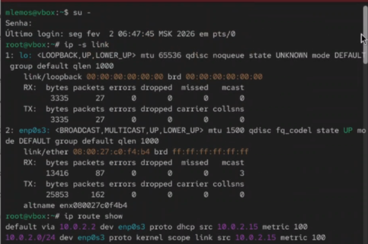
Рис. 1. Просмотр всех сетевых интерфейсов
с помощью команды ip addr show
Просмотр таблицы маршрутизации
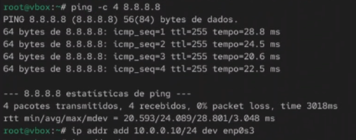
Рис. 2. Просмотр таблицы маршрутизации с
помощью ip route show
Просмотр статистики сетевых интерфейсов
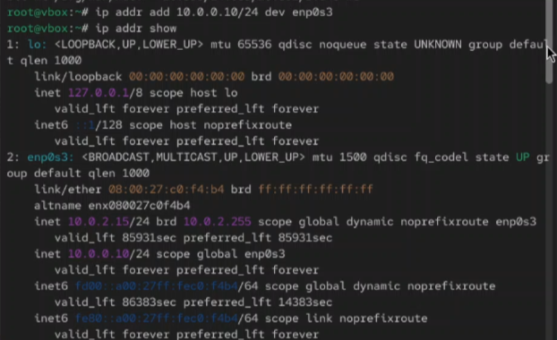
Рис. 3. Просмотр статистики сетевых
интерфейсов с помощью ip -s link
Просмотр активных сетевых соединений
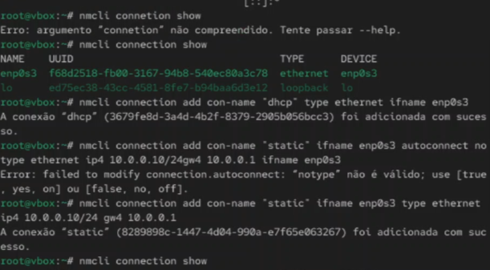
Рис. 4. Просмотр активных сетевых
соединений и открытых портов с помощью ss -tulpn
Просмотр конфигурации DNS
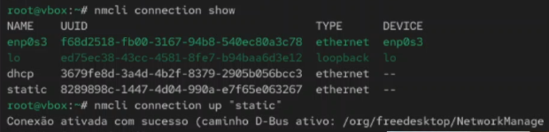
Рис. 5. Просмотр настроек DNS в файле
/etc/resolv.conf
Просмотр файла hosts
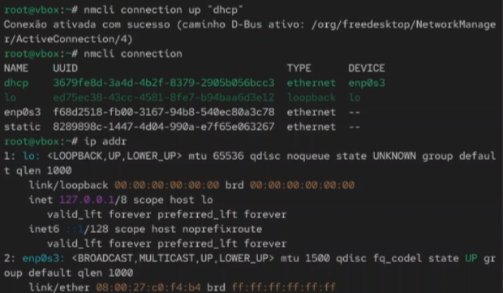
Рис. 6. Просмотр файла /etc/hosts для
локального разрешения имён
Конфигурационные файлы интерфейсов
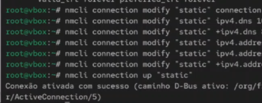
Рис. 7. Просмотр конфигурационных файлов
сетевых интерфейсов в /etc/sysconfig/network-scripts/
Настройка статического IP-адреса
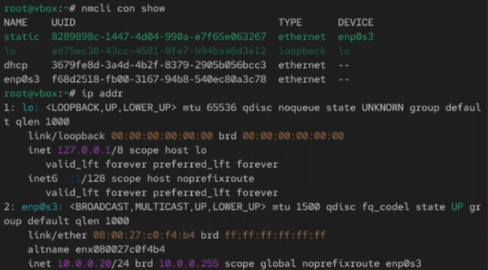
Рис. 8. Настройка статического IP-адреса
в файле конфигурации интерфейса
Настройка динамического IP (DHCP)
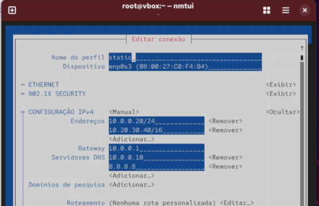
Рис. 9. Настройка получения IP-адреса
через DHCP
Применение сетевых настроек
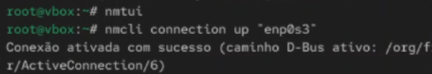
Рис. 10. Перезапуск сетевой службы для
применения изменений
Управление NetworkManager через nmcli
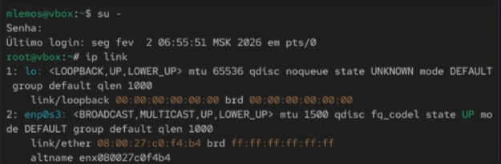
Рис. 11. Просмотр статуса сетевых
устройств с помощью nmcli dev status
Настройка соединения через nmcli
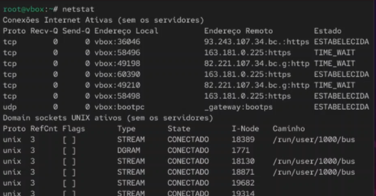
Рис. 12. Создание и настройка сетевого
соединения через nmcli
Текстовый интерфейс nmtui
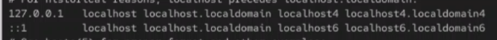
Рис. 13. Интерактивная настройка сети
через текстовый интерфейс nmtui
Управление именем хоста
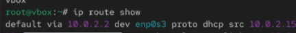
Рис. 14. Управление именем хоста с
помощью команды hostnamectl
Проверка сетевой доступности
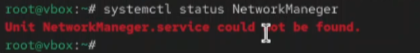
Рис. 15. Проверка сетевой доступности с
помощью команды ping
Вывод
В ходе выполнения лабораторной работы были изучены основные сетевые
параметры в ОС Linux и методы их настройки. Получены практические навыки
просмотра сетевых интерфейсов с помощью команд ip addr,
ip route, ss. Освоены методы настройки
статических и динамических IP-адресов через конфигурационные файлы и с
помощью NetworkManager.
Список литературы
[1] Linux man pages: ip(8), nmcli(1), nmtui(1), hostnamectl(1),
ping(8), ss(8)